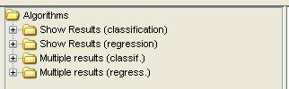
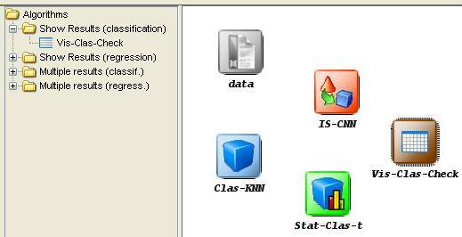

This category includes several visualization modules developed to analyze and summarize the results achieved in the experiments:

- Show Results (classification): Modules for summarizing results achieved in classification problems.
- Show Results (regression): Modules for summarizing results achieved in regression problems.
- Multiple Results (classification): Modules for analyzing results achieved in classification problems with multiple algorithms.
- Multiple Results (regression): Modules for analyzing results achieved in regression problems with multiple algorithms.
To add any visualization module to the current experiment, it is only needed to select it and click in the graph of the experiment:
